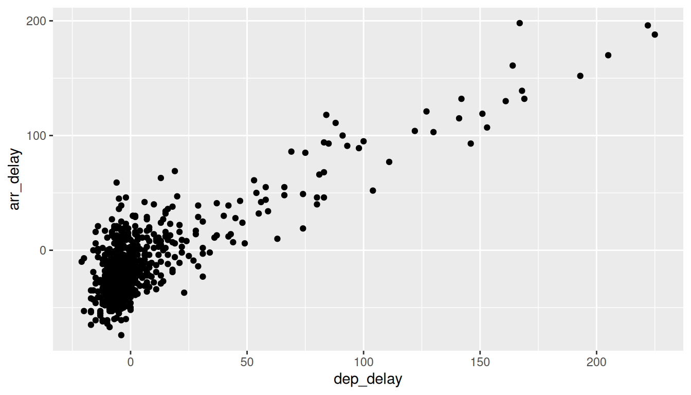
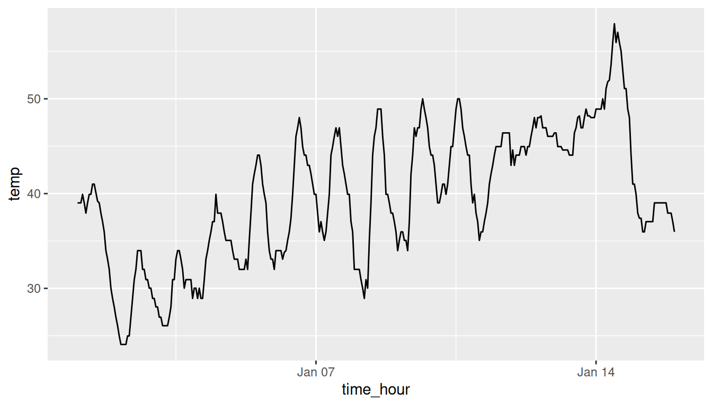
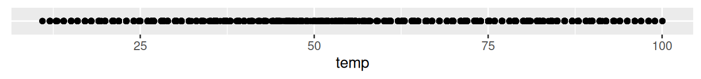
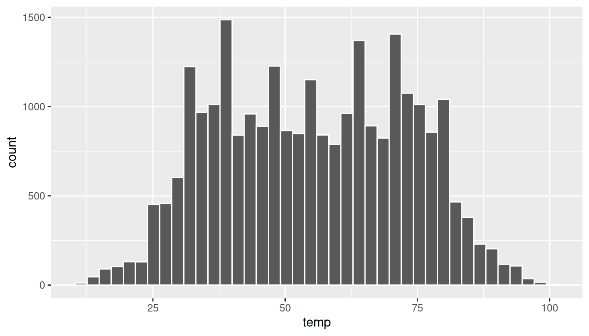
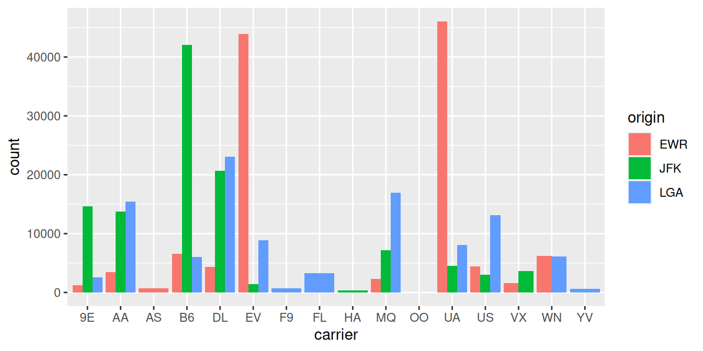

library(nycflights13)
library(ggplot2)
library(dplyr)2 Data Visualization
We begin the development of your data science toolbox with data visualization. By visualizing our data, we gain valuable insights that we couldn’t initially see from just looking at the raw data in spreadsheet form. We will use the ggplot2 package as it provides an easy way to customize your plots. ggplot2 is rooted in the data visualization theory known as The Grammar of Graphics (Wilkinson 2005).
At the most basic level, graphics/plots/charts (we use these terms interchangeably in this book) provide a nice way for us to get a sense for how quantitative variables compare in terms of their center (where the values tend to be located) and their spread (how they vary around the center). Graphics should be designed to emphasize the findings and insight you want your audience to understand. This does however require a balancing act. On the one hand, you want to highlight as many meaningful relationships and interesting findings as possible; on the other you don’t want to include so many as to overwhelm your audience.
As we will see, plots/graphics also help us to identify patterns and outliers in our data. We will see that a common extension of these ideas is to compare the distribution of one quantitative variable (i.e., what the spread of a variable looks like or how the variable is distributed in terms of its values) as we go across the levels of a different categorical variable.
Packages Needed
Let’s load all the packages needed for this chapter (this assumes you’ve already installed them). Read Section 1.3 for information on how to install and load R packages.
2.1 The Grammar of Graphics
We begin with a discussion of a theoretical framework for data visualization known as “The Grammar of Graphics,” which serves as the foundation for the ggplot2 package. Think of how we construct sentences in English to form sentences by combining different elements, like nouns, verbs, particles, subjects, objects, etc. However, we can’t just combine these elements in any arbitrary order; we must do so following a set of rules known as a linguistic grammar. Similarly to a linguistic grammar, “The Grammar of Graphics” define a set of rules for constructing statistical graphics by combining different types of layers. This grammar was created by Leland Wilkinson (Wilkinson 2005) and has been implemented in a variety of data visualization software including R.
2.1.1 Components of the Grammar
In short, the grammar tells us that:
A statistical graphic is a
mappingofdatavariables toaesthetic attributes ofgeometric objects.
Specifically, we can break a graphic into three essential components:
data: the data set composed of variables that we map.geom: the geometric object in question. This refers to the type of object we can observe in a plot. For example: points, lines, and bars.aes: aesthetic attributes of the geometric object. For example, x-position, y-position, color, shape, and size. Each assigned aesthetic attribute can be mapped to a variable in our data set.
You might be wondering why we wrote the terms data, geom, and aes in a computer code type font. We’ll see very shortly that we’ll specify the elements of the grammar in R using these terms. However, let’s first break down the grammar with an example.
2.1.2 Gapminder data
In February 2006, a statistician named Hans Rosling gave a TED talk titled “The best stats you’ve ever seen” where he presented global economic, health, and development data from the website gapminder.org. For example, for the 142 countries included from 2007, let’s consider only the first 6 countries when listed alphabetically in Table 2.1.
| Country | Continent | Life Expectancy | Population | GDP per Capita |
|---|---|---|---|---|
| Afghanistan | Asia | 43.8 | 31889923 | 975 |
| Albania | Europe | 76.4 | 3600523 | 5937 |
| Algeria | Africa | 72.3 | 33333216 | 6223 |
| Angola | Africa | 42.7 | 12420476 | 4797 |
| Argentina | Americas | 75.3 | 40301927 | 12779 |
| Australia | Oceania | 81.2 | 20434176 | 34435 |
Each row in this table corresponds to a country in 2007. For each row, we have 5 columns:
- Country: Name of country.
- Continent: Which of the five continents the country is part of. (Note that “Americas” includes countries in both North and South America and that Antarctica is excluded.)
- Life Expectancy: Life expectancy in years.
- Population: Number of people living in the country.
- GDP per Capita: Gross domestic product (in US dollars).
Now consider Figure 2.1, which plots this data for all 142 countries in the data.
Let’s view this plot through the grammar of graphics:
- The
datavariable GDP per Capita gets mapped to thex-positionaesthetic of the points. - The
datavariable Life Expectancy gets mapped to they-positionaesthetic of the points. - The
datavariable Population gets mapped to thesizeaesthetic of the points. - The
datavariable Continent gets mapped to thecoloraesthetic of the points.
We’ll see shortly that data corresponds to the particular data frame where our data is saved and a “data variable” corresponds to a particular column in the data frame. Furthermore, the type of geometric object considered in this plot are points. That being said, while in this example we are considering points, graphics are not limited to just points. Other plots involve lines while others involve bars.
Let’s summarize the three essential components of the Grammar in Table 2.2.
| data variable | aes | geom |
|---|---|---|
| GDP per Capita | x | point |
| Life Expectancy | y | point |
| Population | size | point |
| Continent | color | point |
2.1.3 Other components
There are other components of the Grammar of Graphics we can control as well. As you start to delve deeper into the Grammar of Graphics, you’ll start to encounter these topics more frequently. In this book however, we’ll keep things simple and only work with the two additional components listed below:
faceting breaks up a plot into small multiples corresponding to the levels of another variable (Section 2.6)positionadjustments for barplots (Section 2.8)
Other more complex components like scales and coordinate systems are left for a more advanced text such as R for Data Science (Grolemund and Wickham 2016). Generally speaking, the Grammar of Graphics allows for a high degree of customization of plots and also a consistent framework for easily updating and modifying them.
2.1.4 ggplot2 package
In this book, we will be using the ggplot2 package for data visualization, which is an implementation of the Grammar of Graphics for R (Wickham et al. 2022). As we noted earlier, a lot of the previous section was written in a computer code type font. This is because the various components of the Grammar of Graphics are specified in the ggplot() function included in the ggplot2 package, which expects at a minimum as arguments (i.e. inputs):
- The data frame where the variables exist: the
dataargument. - The mapping of the variables to aesthetic attributes: the
mappingargument which specifies theaesthetic attributes involved.
After we’ve specified these components, we then add layers to the plot using the + sign. The most essential layer to add to a plot is the layer that specifies which type of geometric object we want the plot to involve: points, lines, bars, and others. Other layers we can add to a plot include layers specifying the plot title, axes labels, visual themes for the plots, and facets (which we’ll see in Section 2.6.
Let’s now put the theory of the Grammar of Graphics into practice.
2.2 Five Named Graphs - The 5NG
In order to keep things simple, we will only focus on five types of graphics in this book, each with a commonly given name. We term these “five named graphs” the 5NG:
- scatterplots
- linegraphs
- boxplots
- histograms
- barplots
We will discuss some variations of these plots, but with this basic repertoire of graphics in your toolbox you can visualize a wide array of different variable types. Note that certain plots are only appropriate for categorical variables and while others are only appropriate for quantitative variables. You’ll want to quiz yourself often as we go along on which plot makes sense a given a particular problem or data set.
2.3 5NG#1: Scatterplots
The simplest of the 5NG are scatterplots, also called bivariate plots. They allow you to visualize the relationship between two numerical variables. While you may already be familiar with scatterplots, let’s view them through the lens of the Grammar of Graphics. Specifically, we will visualize the relationship between the following two numerical variables in the flights data frame included in the nycflights13 package:
dep_delay: departure delay on the horizontal “x” axis andarr_delay: arrival delay on the vertical “y” axis
for Alaska Airlines flights leaving NYC in 2013. This requires paring down the data from all 336,776 flights that left NYC in 2013, to only the 714 Alaska Airlines flights that left NYC in 2013.
What this means computationally is: we’ll take the flights data frame, extract only the 714 rows corresponding to Alaska Airlines flights, and save this in a new data frame called alaska_flights. Run the code below to do this:
alaska_flights <- flights %>%
filter(carrier == "AS")For now we suggest you ignore how this code works; we’ll explain this in detail in Chapter 3 when we cover data wrangling. However, convince yourself that this code does what it is supposed to by running View(alaska_flights): it creates a new data frame alaska_flights consisting of only the 714 Alaska Airlines flights.
We’ll see later in Chapter 3 on data wrangling that this code uses the dplyr package for data wrangling to achieve our goal: it takes the flights data frame and filters it to only return the rows where carrier is equal to "AS", Alaska Airlines’ carrier code. Other examples of carrier codes include “AA” for American Airlines and “UA” for United Airlines. Recall from Section 1.2 that testing for equality is specified with == and not =. Fasten your seat belts and sit tight for now however, we’ll introduce these ideas more fully in Chapter 3.
2.3.1 Scatterplots via geom_point
Let’s now go over the code that will create the desired scatterplot, keeping in mind our discussion on the Grammar of Graphics in Section 2.1. We’ll be using the ggplot() function included in the ggplot2 package.
ggplot(data = alaska_flights, mapping = aes(x = dep_delay, y = arr_delay)) +
geom_point()Let’s break this down piece-by-piece:
- Within the
ggplot()function, we specify two of the components of the Grammar of Graphics as arguments (i.e. inputs):- The
dataframe to bealaska_flightsby settingdata = alaska_flights. - The
aestheticmappingby settingaes(x = dep_delay, y = arr_delay). Specifically:- the variable
dep_delaymaps to thexposition aesthetic - the variable
arr_delaymaps to theyposition aesthetic
- the variable
- The
- We add a layer to the
ggplot()function call using the+sign. The layer in question specifies the third component of the grammar: thegeometric object. In this case the geometric object are points, set by specifyinggeom_point().
After running the above code, you’ll notice two outputs: a warning message and the graphic shown in Figure 2.2. Let’s first unpack the warning message:
Warning: Removed 5 rows containing missing values (`geom_point()`).
After running the above code, R returns a warning message alerting us to the fact that 5 rows were ignored due to them being missing. For 5 rows either the value for dep_delay or arr_delay or both were missing (recorded in R as NA), and thus these rows were ignored in our plot. Turning our attention to the resulting scatterplot in Figure 2.2, we see that a positive relationship exists between dep_delay and arr_delay: as departure delays increase, arrival delays tend to also increase. We also note the large mass of points clustered near (0, 0).
Before we continue, let’s consider a few more notes on the layers in the above code that generated the scatterplot:
- Note that the
+sign comes at the end of lines, and not at the beginning. You’ll get an error in R if you put it at the beginning. - When adding layers to a plot, you are encouraged to start a new line after the
+so that the code for each layer is on a new line. As we add more and more layers to plots, you’ll see this will greatly improve the legibility of your code. - To stress the importance of adding layers in particular the layer specifying the
geometric object, consider Figure 2.3 where no layers are added. A not very useful plot!
ggplot(data = alaska_flights, mapping = aes(x = dep_delay, y = arr_delay))2.3.2 Over-plotting
The large mass of points near (0, 0) in Figure 2.2 can cause some confusion as it is hard to tell the true number of points that are plotted. This is the result of a phenomenon called overplotting. As one may guess, this corresponds to values being plotted on top of each other over and over again. It is often difficult to know just how many values are plotted in this way when looking at a basic scatterplot as we have here. There are two methods to address the issue of overplotting:
- By adjusting the transparency of the points.
- By adding a little random “jitter”, or random “nudges”, to each of the points.
Method 1: Changing the transparency
The first way of addressing overplotting is by changing the transparency of the points by using the alpha argument in geom_point(). By default, this value is set to 1. We can change this to any value between 0 and 1, where 0 sets the points to be 100% transparent and 1 sets the points to be 100% opaque. Note how the following code is identical to the code in Section 2.3 that created the scatterplot with overplotting, but with alpha = 0.2 added to the geom_point():
ggplot(data = alaska_flights, mapping = aes(x = dep_delay, y = arr_delay)) +
geom_point(alpha = 0.2)The key feature to note in Figure 2.4 is that the transparency of the points is cumulative: areas with a high-degree of overplotting are darker, whereas areas with a lower degree are less dark. Note furthermore that there is no aes() surrounding alpha = 0.2. This is because we are not mapping a variable to an aesthetic attribute, but rather merely changing the default setting of alpha. In fact, you’ll receive an error if you try to change the second line above to read geom_point(aes(alpha = 0.2)).
Method 2: Jittering the points
The second way of addressing overplotting is by jittering all the points, in other words give each point a small nudge in a random direction. You can think of “jittering” as shaking the points around a bit on the plot. Let’s illustrate using a simple example first. Say we have a data frame jitter_example with 4 rows of identical value 0 for both x and y:
# A tibble: 4 × 2
x y
<dbl> <dbl>
1 0 0
2 0 0
3 0 0
4 0 0We display the resulting scatterplot in Figure 2.5; observe that the 4 points are superimposed on top of each other. While we know there are 4 values being plotted, this fact might not be apparent to others.
In Figure 2.6 we instead display a jittered scatterplot where each point is given a random “nudge.” It is now plainly evident that this plot involves four points. Keep in mind that jittering is strictly a visualization tool; even after creating a jittered scatterplot, the original values saved in jitter_example remain unchanged.
To create a jittered scatterplot, instead of using geom_point(), we use geom_jitter(). To specify how much jitter to add, we adjust the width and height arguments. This corresponds to how hard you’d like to shake the plot in units corresponding to those for both the horizontal and vertical variables (in this case minutes).
ggplot(data = alaska_flights, mapping = aes(x = dep_delay, y = arr_delay)) +
geom_jitter(width = 30, height = 30)Observe how the above code is identical to the code that created the scatterplot with overplotting in Subsection 2.3.1, but with geom_point() replaced with geom_jitter().
The resulting plot in Figure 2.7 helps us a little bit in getting a sense for the overplotting, but with a relatively large data set like this one (714 flights), it can be argued that changing the transparency of the points by setting alpha proved more effective. In terms of how much jitter one should add using the width and height arguments, it is important to add just enough jitter to break any overlap in points, but not so much that we completely alter the overall pattern in points.
2.3.3 Summary
Scatterplots display the relationship between two numerical variables. They are among the most commonly used plots because they can provide an immediate way to see the trend in one variable versus another. However, if you try to create a scatterplot where either one of the two variables is not numerical, you might get strange results. Be careful!
With medium to large data sets, you may need to play around with the different modifications one can make to a scatterplot. This tweaking is often a fun part of data visualization, since you’ll have the chance to see different relationships come about as you make subtle changes to your plots.
2.4 5NG#2: Linegraphs
The next of the five named graphs are linegraphs. Linegraphs show the relationship between two numerical variables when the variable on the x-axis, also called the explanatory variable, is of a sequential nature; in other words there is an inherent ordering to the variable. The most common example of linegraphs have some notion of time on the x-axis: hours, days, weeks, years, etc. Since time is sequential, we connect consecutive observations of the variable on the y-axis with a line. Linegraphs that have some notion of time on the x-axis are also called time series plots. Linegraphs should be avoided when there is not a clear sequential ordering to the variable on the x-axis. Let’s illustrate linegraphs using another data set in the nycflights13 package: the weather data frame.
Let’s get a sense for the weather data frame:
- Explore the
weatherdata by runningView(weather). - Run
?weatherto bring up the help file.
We can see that there is a variable called temp of hourly temperature recordings in Fahrenheit at weather stations near all three airports in New York City: Newark (origin code EWR), JFK, and La Guardia (LGA). Instead of considering hourly temperatures for all days in 2013 for all three airports however, for simplicity let’s only consider hourly temperatures at only Newark airport for the first 15 days in January.
Recall in Section 2.3 we used the filter() function to only choose the subset of rows of flights corresponding to Alaska Airlines flights. We similarly use filter() here, but by using the & operator we only choose the subset of rows of weather where
- The
originis"EWR"and - the
monthis January and - the
dayis between1and15
early_january_weather <- weather %>%
filter(origin == "EWR" & month == 1 & day <= 15)2.4.1 Linegraphs via geom_line
Let’s plot a linegraph of hourly temperatures in early_january_weather by using geom_line() instead of geom_point() like we did for scatterplots:
ggplot(data = early_january_weather, mapping = aes(x = time_hour, y = temp)) +
geom_line()
Much as with the ggplot() code that created the scatterplot of departure and arrival delays for Alaska Airlines flights in Figure 2.2, let’s break down the above code piece-by-piece in terms of the Grammar of Graphics:
- Within the
ggplot()function call, we specify two of the components of the Grammar of Graphics as arguments:- The
dataframe to beearly_january_weatherby settingdata = early_january_weather - The
aesthetic mapping by settingaes(x = time_hour, y = temp). Specifically:- the variable
time_hourmaps to thexposition aesthetic. - the variable
tempmaps to theyposition aesthetic
- the variable
- The
- We add a layer to the
ggplot()function call using the+sign. The layer in question specifies the third component of the grammar: thegeometric object in question. In this case the geometric object is aline, set by specifyinggeom_line().
2.4.2 Summary
Linegraphs, just like scatterplots, display the relationship between two numerical variables. However it is preferred to use linegraphs over scatterplots when the variable on the x-axis (i.e. the explanatory variable) has an inherent ordering, like some notion of time.
2.5 5NG#3: Histograms
Let’s consider the temp variable in the weather data frame once again, but unlike with the linegraphs in Section 2.4, let’s say we don’t care about the relationship of temperature to time, but rather we only care about how the values of temp distribute. In other words:
- What are the smallest and largest values?
- What is the “center” value?
- How do the values spread out?
- What are frequent and infrequent values?
One way to visualize this distribution of this single variable temp is to plot them on a horizontal line as we do in Figure 2.9:

This gives us a general idea of how the values of temp distribute: observe that temperatures vary from around 11°F up to 100°F. Furthermore, there appear to be more recorded temperatures between 40°F and 60°F than outside this range. However, because of the high degree of overlap in the points, it’s hard to get a sense of exactly how many values are between, say, 50°F and 55°F.
What is commonly produced instead of the above plot is known as a histogram. A histogram is a plot that visualizes the distribution of a numerical value as follows:
We first cut up the x-axis into a series of bins, where each bin represents a range of values.
For each bin, we count the number of observations that fall in the range corresponding to that bin.
Then for each bin, we draw a bar whose height marks the corresponding count.
Let’s drill-down on an example of a histogram, shown in @fig-histogramexample.
Observe that there are three bins of equal width between 30°F and 60°F, thus we have three bins of width 10°F each: one bin for the 30-40°F range, another bin for the 40-50°F range, and another bin for the 50-60°F range. Since:
- The bin for the 30-40°F range has a height of around 5000, this histogram is telling us that around 5000 of the hourly temperature recordings are between 30°F and 40°F.
- The bin for the 40-50°F range has a height of around 4300, this histogram is telling us that around 4300 of the hourly temperature recordings are between 40°F and 50°F.
- The bin for the 50-60°F range has a height of around 3500, this histogram is telling us that around 3500 of the hourly temperature recordings are between 50°F and 60°F.
The remaining bins all have a similar interpretation.
2.5.1 Histograms via geom_histogram
Let’s now present the ggplot() code to plot your first histogram! Unlike with scatterplots and linegraphs, there is now only one variable being mapped in aes(): the single numerical variable temp. The y-aesthetic of a histogram gets computed for you automatically. Furthermore, the geometric object layer is now a geom_histogram()
ggplot(data = weather, mapping = aes(x = temp)) +
geom_histogram()`stat_bin()` using `bins = 30`. Pick better value with `binwidth`.Warning: Removed 1 rows containing non-finite values (`stat_bin()`).Let’s unpack the messages R sent us first. The first message is telling us that the histogram was constructed using bins = 30, in other words 30 equally spaced bins. This is known in computer programming as a default value; unless you override this default number of bins with a number you specify, R will choose 30 by default. We’ll see in the next section how to change this default number of bins. The second message is telling us something similar to the warning message we received when we ran the code to create a scatterplot of departure and arrival delays for Alaska Airlines flights in Figure 2.2: that because one row has a missing NA value for temp, it was omitted from the histogram. R is just giving us a friendly heads up that this was the case.
Now’s let’s unpack the resulting histogram in Figure 2.11. Observe that values less than 25°F as well as values above 80°F are rather rare. However, because of the large number of bins, its hard to get a sense for which range of temperatures is covered by each bin; everything is one giant amorphous blob. So let’s add white vertical borders demarcating the bins by adding a color = "white" argument to geom_histogram():
ggplot(data = weather, mapping = aes(x = temp)) +
geom_histogram(color = "white")We can now better associate ranges of temperatures to each of the bins. We can also vary the color of the bars by setting the fill argument. Run colors() to see all 657 possible choice of colors!
ggplot(data = weather, mapping = aes(x = temp)) +
geom_histogram(color = "white", fill = "steelblue")2.5.2 Adjusting the bins
Observe in both Figure 2.12 and Figure 2.13 that in the 50-75°F range there appear to be roughly 8 bins. Thus each bin has width 25 divided by 8, or roughly 3.12°F which is not a very easily interpretable range to work with. Let’s now adjust the number of bins in our histogram in one of two methods:
- By adjusting the number of bins via the
binsargument togeom_histogram(). - By adjusting the width of the bins via the
binwidthargument togeom_histogram().
Using the first method, we have the power to specify how many bins we would like to cut the x-axis up in. As mentioned in the previous section, the default number of bins is 30. We can override this default, to say 40 bins, as follows:
ggplot(data = weather, mapping = aes(x = temp)) +
geom_histogram(bins = 40, color = "white")
Using the second method, instead of specifying the number of bins, we specify the width of the bins by using the binwidth argument in the geom_histogram() layer. For example, let’s set the width of each bin to be 10°F.
ggplot(data = weather, mapping = aes(x = temp)) +
geom_histogram(binwidth = 10, color = "white")2.5.3 Summary
Histograms, unlike scatterplots and linegraphs, present information on only a single numerical variable. Specifically, they are visualizations of the distribution of the numerical variable in question.
2.6 Facets
Before continuing the 5NG, let’s briefly introduce a new concept called faceting. Faceting is used when we’d like to split a particular visualization of variables by another variable. This will create multiple copies of the same type of plot with matching x and y axes, but whose content will differ.
For example, suppose we were interested in looking at how the histogram of hourly temperature recordings at the three NYC airports we saw in Section 2.5 differed by month. We would “split” this histogram by the 12 possible months in a given year, in other words plot histograms of temp for each month. We do this by adding facet_wrap(~ month) layer.
ggplot(data = weather, mapping = aes(x = temp)) +
geom_histogram(binwidth = 5, color = "white") +
facet_wrap(~ month)Note the use of the tilde ~ before month in facet_wrap(). The tilde is required and you’ll receive the error Error in as.quoted(facets) : object 'month' not found if you don’t include it before month here. We can also specify the number of rows and columns in the grid by using the nrow and ncol arguments inside of facet_wrap(). For example, say we would like our faceted plot to have 4 rows instead of 3. Add the nrow = 4 argument to facet_wrap(~ month)
ggplot(data = weather, mapping = aes(x = temp)) +
geom_histogram(binwidth = 5, color = "white") +
facet_wrap(~ month, nrow = 4)Observe in both Figure 2.16 and Figure 2.17 that as we might expect in the Northern Hemisphere, temperatures tend to be higher in the summer months, while they tend to be lower in the winter.
2.7 5NG#4: Boxplots
While faceted histograms are one visualization that allows us to compare distributions of a numerical variable split by another variable, another visualization that achieves this same goal are side-by-side boxplots. A boxplot is constructed from the information provided in the five-number summary of a numerical variable (see Appendix A). To keep things simple for now, let’s only consider hourly temperature recordings for the month of November in Figure 2.18.
These 2141 observations have the following five-number summary:
- Minimum: 21.02°F
- First quartile AKA 25th percentile: 35.96°F
- Median AKA second quartile AKA 50th percentile: 44.96°F
- Third quartile AKA 75th percentile: 51.98°F
- Maximum: 71.06°F
Let’s mark these 5 values with dashed horizontal lines in Figure 2.19.
Let’s add the boxplot underneath these points and dashed horizontal lines in Figure 2.20.
What the boxplot does summarize the 2141 points by emphasizing that:
25% of points (about 534 observations) fall below the bottom edge of the box, which is the first quartile of 35.96°F. In other words 25% of observations were colder than 35.96°F.
25% of points fall between the bottom edge of the box and the solid middle line, which is the median of 44.96°F. In other words 25% of observations were between 35.96 and 44.96°F and 50% of observations were colder than 44.96°F.
25% of points fall between the solid middle line and the top edge of the box, which is the third quartile of 51.98°F. In other words 25% of observations were between 44.96 and 51.98°F and 75% of observations were colder than 51.98°F.
25% of points fall over the top edge of the box. In other words 25% of observations were warmer than 51.98°F.
The middle 50% of points lie within the interquartile range between the first and third quartile of 51.98 - 35.96 = 16.02°F.
Lastly, for clarity’s sake let’s remove the points but keep the dashed horizontal lines in Figure 2.21.
We can now better see the whiskers of the boxplot. They stick out from either end of the box all the way to the minimum and maximum observed temperatures of 21.02°F and 71.06°F respectively. However, the whiskers don’t always extend to the smallest and largest observed values. They in fact can extend no more than 1.5 \(\times\) the interquartile range from either end of the box, in this case 1.5 \(\times\) 16.02°F = 24.03°F from either end of the box. Any observed values outside this whiskers get marked with points called outliers, which we’ll see in the next section.
2.7.1 Boxplots via geom_boxplot
Let’s now create a side-by-side boxplot of hourly temperatures split by the 12 months as we did above with the faceted histograms. We do this by mapping the month variable to the x-position aesthetic, the temp variable to the y-position aesthetic, and by adding a geom_boxplot() layer:
ggplot(data = weather, mapping = aes(x = month, y = temp)) +
geom_boxplot()
Warning messages:
1: Continuous x aesthetic -- did you forget aes(group=...)?
2: Removed 1 rows containing non-finite values (stat_boxplot). Observe in Figure 2.22 that this plot does not provide information about temperature separated by month. The warning messages clue us in as to why. The second warning message is identical to the warning message when plotting a histogram of hourly temperatures: that one of the values was recorded as NA missing. However, the first warning message is telling us that we have a “continuous”, or numerical variable, on the x-position aesthetic. Boxplots however require a categorical variable on the x-axis.
We can convert the numerical variable month into a categorical variable by using the factor() function. So after applying factor(month), month goes from having numerical values 1, 2, …, 12 to having labels “1”, “2”, …, “12.”
ggplot(data = weather, mapping = aes(x = factor(month), y = temp)) +
geom_boxplot()The resulting Figure 2.23 shows 12 separate “box and whiskers” plots with the features we saw earlier focusing only on November:
The “box” portions of this visualization represent the 1st quartile, the median AKA the 2nd quartile, and the 3rd quartile.
The “length” of each box, i.e. the value of the 3rd quartile minus the value of the 1st quartile, is the interquartile range. It is a measure of spread of the middle 50% of values, with longer boxes indicating more variability.
The “whisker” portions of these plots extend out from the bottoms and tops of the boxes and represent points less than the 25th percentile and greater than the 75th percentiles respectively. They’re set to extend out no more than \(1.5 \times IQR\) units away from either end of the boxes. We say “no more than” because the ends of the whiskers have to correspond to observed temperatures. The length of these whiskers show how the data outside the middle 50% of values vary, with longer whiskers indicating more variability.
The dots representing values falling outside the whiskers are called outliers. These can be thought of as anomalous values.
It is important to keep in mind that the definition of an outlier is somewhat arbitrary and not absolute. In this case, they are defined by the length of the whiskers, which are no more than \(1.5 \times IQR\) units long. Looking at this plot we can see, as expected, that summer months (6 through 8) have higher median temperatures as evidenced by the higher solid lines in the middle of the boxes. We can easily compare temperatures across months by drawing imaginary horizontal lines across the plot. Furthermore, the height of the 12 boxes as quantified by the interquartile ranges are informative too; they tell us about variability, or spread, of temperatures recorded in a given month.
2.7.2 Summary
Side-by-side boxplots provide us with a way to compare and contrast the distribution of a quantitative variable across multiple levels of another categorical variable. One can see where the median falls across the different groups by looking at the center line in the boxes. To see how spread out the variable is across the different groups, look at both the width of the box and also how far the whiskers stretch out away from the box. Outliers are even more easily identified when looking at a boxplot than when looking at a histogram as they are marked with points.
2.8 5NG#5: Barplots
Both histograms and boxplots are tools to visualize the distribution of numerical variables. Another common task is visualize the distribution of a categorical variable. This is a simpler task, as we are simply counting different categories, also known as levels, of a categorical variable. Often the best way to visualize these different counts, also known as frequencies, is with a barplot (also known as a barchart). One complication, however, is how your data is represented: is the categorical variable of interest “pre-counted” or not? For example, run the following code that manually creates two data frames representing a collection of fruit: 3 apples and 2 oranges.
fruits <- tibble(
fruit = c("apple", "apple", "orange", "apple", "orange")
)
fruits_counted <- tibble(
fruit = c("apple", "orange"),
number = c(3, 2)
)We see both the fruits and fruits_counted data frames represent the same collection of fruit. Whereas fruits just lists the fruit individually…
# A tibble: 5 × 1
fruit
<chr>
1 apple
2 apple
3 orange
4 apple
5 orange… fruits_counted has a variable number which represents pre-counted values of each fruit.
# A tibble: 2 × 2
fruit number
<chr> <dbl>
1 apple 3
2 orange 2Depending on how your categorical data is represented, you’ll need to use add a different geom layer to your ggplot() to create a barplot, as we now explore.
2.8.1 Barplots via geom_bar or geom_col
Let’s generate barplots using these two different representations of the same basket of fruit: 3 apples and 2 oranges. Using the fruits data frame where all 5 fruits are listed individually in 5 rows, we map the fruit variable to the x-position aesthetic and add a geom_bar() layer.
ggplot(data = fruits, mapping = aes(x = fruit)) +
geom_bar()However, using the fruits_counted data frame where the fruit have been “pre-counted”, we map the fruit variable to the x-position aesthetic as with geom_bar(), but we also map the count variable to the y-position aesthetic, and add a geom_col() layer.
ggplot(data = fruits_counted, mapping = aes(x = fruit, y = number)) +
geom_col()
Compare the barplots in Figure 2.24 and Figure 2.25. They are identical because they reflect count of the same 5 fruit. However depending on how our data is saved, either pre-counted or not, we must add a different geom layer. When the categorical variable whose distribution you want to visualize is:
- Is not pre-counted in your data frame: use
geom_bar(). - Is pre-counted in your data frame, use
geom_col()with the y-position aesthetic mapped to the variable that has the counts.
Let’s now go back to the flights data frame in the nycflights13 package and visualize the distribution of the categorical variable carrier. In other words, let’s visualize the number of domestic flights out of the three New York City airports each airline company flew in 2013. Recall from Section 1.4.3 when you first explored the flights data frame you saw that each row corresponds to a flight. In other words the flights data frame is more like the fruits data frame than the fruits_counted data frame above, and thus we should use geom_bar() instead of geom_col() to create a barplot. Much like a geom_histogram(), there is only one variable in the aes() aesthetic mapping: the variable carrier gets mapped to the x-position.
ggplot(data = flights, mapping = aes(x = carrier)) +
geom_bar()
geom_bar()Observe in Figure 2.26 that United Air Lines (UA), JetBlue Airways (B6), and ExpressJet Airlines (EV) had the most flights depart New York City in 2013. If you don’t know which airlines correspond to which carrier codes, then run View(airlines) to see a directory of airlines. For example: AA is American Airlines; B6 is JetBlue Airways; DL is Delta Airlines; EV is ExpressJet Airlines; MQ is Envoy Air; while UA is United Airlines.
Alternatively, say you had a data frame flights_counted where the number of flights for each carrier was pre-counted like in Table 2.3.
| carrier | number |
|---|---|
| UA | 58665 |
| B6 | 54635 |
| EV | 54173 |
| DL | 48110 |
| AA | 32729 |
| MQ | 26397 |
| US | 20536 |
| 9E | 18460 |
| WN | 12275 |
| VX | 5162 |
| FL | 3260 |
| AS | 714 |
| F9 | 685 |
| YV | 601 |
| HA | 342 |
| OO | 32 |
In order to create a barplot visualizing the distribution of the categorical variable carrier in this case, we would use geom_col() instead with x mapped to carrier and y mapped to number as seen below. The resulting barplot would be identical to Figure 2.26.
ggplot(data = flights_table, mapping = aes(x = carrier, y = number)) +
geom_col()2.8.2 Must avoid pie charts!
Unfortunately, one of the most common plots seen today for categorical data is the pie chart. While they may seem harmless enough, they actually present a problem in that humans are unable to judge angles well. As Naomi Robbins describes in her book “Creating More Effective Graphs” (Robbins 2013), we overestimate angles greater than 90 degrees and we underestimate angles less than 90 degrees. In other words, it is difficult for us to determine relative size of one piece of the pie compared to another.
Let’s examine the same data used in our previous barplot of the number of flights departing NYC by airline in Figure 2.26, but this time we will use a pie chart in Figure 2.27.
Try to answer the following questions:
- How much larger the portion of the pie is for ExpressJet Airlines (
EV) compared to US Airways (US), - What the third largest carrier is in terms of departing flights, and
- How many carriers have fewer flights than United Airlines (
UA)?
While it is quite difficult to answer these questions when looking at the pie chart in Figure 2.27, we can much more easily answer these questions using the barchart in Figure Figure 2.26. This is true since barplots present the information in a way such that comparisons between categories can be made with single horizontal lines, whereas pie charts present the information in a way such that comparisons between categories must be made by comparing angles.
There may be one exception of a pie chart not to avoid courtesy Nathan Yau at FlowingData.com, but we will leave this for the reader to decide:

2.8.3 Two categorical variables
Barplots are the go-to way to visualize the frequency of different categories, or levels, of a single categorical variable. Another use of barplots is to visualize the joint distribution of two categorical variables at the same time. Let’s examine the joint distribution of outgoing domestic flights from NYC by carrier and origin, or in other words the number of flights for each carrier and origin combination. For example, the number of WestJet flights from JFK, the number of WestJet flights from LGA, the number of WestJet flights from EWR, the number of American Airlines flights from JFK, and so on. Recall the ggplot() code that created the barplot of carrier frequency in Figure 2.26:
ggplot(data = flights, mapping = aes(x = carrier)) +
geom_bar()
We can now map the additional variable origin by adding a fill = origin inside the aes() aesthetic mapping; the fill aesthetic of any bar corresponds to the color used to fill the bars.
ggplot(data = flights, mapping = aes(x = carrier, fill = origin)) +
geom_bar()Figure 2.28 is an example of a stacked barplot. While simple to make, in certain aspects it is not ideal. For example, it is difficult to compare the heights of the different colors between the bars, corresponding to comparing the number of flights from each origin airport between the carriers.
Before we continue, let’s address some common points of confusion amongst new R users. First, note that fill is another aesthetic mapping much like x-position; thus it must be included within the parentheses of the aes() mapping. The following code, where the fill aesthetic is specified outside the aes() mapping will yield an error. This is a fairly common error that new ggplot users make:
ggplot(data = flights, mapping = aes(x = carrier), fill = origin) +
geom_bar()Second, the fill aesthetic corresponds to the color used to fill the bars, while the color aesthetic corresponds to the color of the outline of the bars. Observe in Figure 2.29 that mapping origin to color and not fill yields grey bars with different colored outlines.
ggplot(data = flights, mapping = aes(x = carrier, color = origin)) +
geom_bar()Another alternative to stacked barplots are side-by-side barplots, also known as a dodged barplot. The code to created a side-by-side barplot is identical to the code to create a stacked barplot, but with a position = "dodge" argument added to geom_bar(). In other words, we are overriding the default barplot type, which is a stacked barplot, and specifying it to be a side-by-side barplot.
ggplot(data = flights, mapping = aes(x = carrier, fill = origin)) +
geom_bar(position = "dodge")
Lastly, another type of barplot is a faceted barplot. Recall in Section 2.6 we visualized the distribution of hourly temperatures at the 3 NYC airports split by month using facets. We apply the same principle to our barplot visualizing the frequency of carrier split by origin: instead of mapping origin
ggplot(data = flights, mapping = aes(x = carrier)) +
geom_bar() +
facet_wrap(~ origin, ncol = 1)2.8.4 Summary
Barplots are the preferred way of displaying the distribution of a categorical variable, or in other words the frequency with which the different categories called levels occur. They are easy to understand and make it easy to make comparisons across levels. When trying to visualize two categorical variables, you have many options: stacked barplots, side-by-side barplots, and faceted barplots. Depending on what aspect of the joint distribution you are trying to emphasize, you will need to make a choice between these three types of barplots.
2.9 Conclusion
2.9.1 Summary table
Let’s recap all five of the Five Named Graphs (5NG) in Table 2.4 summarizing their differences. Using these 5NG, you’ll be able to visualize the distributions and relationships of variables contained in a wide array of datasets. This will be even more the case as we start to map more variables to more of each geometric object’s aesthetic attribute options, further unlocking the awesome power of the ggplot2 package.
| Named graph | Shows | Geometric object | Notes |
|---|---|---|---|
| Scatterplot | Relationship between 2 numerical variables | geom_point() |
|
| Linegraph | Relationship between 2 numerical variables | geom_line() |
Used when there is a sequential order to x-variable e.g. time |
| Histogram | Distribution of 1 numerical variable | geom_histogram() |
Facetted histograms show the distribution of 1 numerical variable split by the values of another variable |
| Boxplot | Distribution of 1 numerical variable split by the values of another variable | geom_boxplot() |
|
| Barplot | Distribution of 1 categorical variable | geom_bar() when counts are not pre-counted, geom_col() when counts are pre-counted |
Stacked, side-by-side, and faceted barplots show the joint distribution of 2 categorical variables |
2.9.2 Argument specification
Run the following two segments of code. First this:
ggplot(data = flights, mapping = aes(x = carrier)) +
geom_bar()then this:
ggplot(flights, aes(x = carrier)) +
geom_bar()You’ll notice that that both code segments create the same barplot, even though in the second segment we omitted the data = and mapping = code argument names. This is because the ggplot() by default assumes that the data argument comes first and the mapping argument comes second. So as long as you specify the data frame in question first and the aes() mapping second, you can omit the explicit statement of the argument names data = and mapping =.
Going forward for the rest of this book, all ggplot() will be like the second segment above: with the data = and mapping = explicit naming of the argument omitted and the default ordering of arguments respected.
2.9.3 Additional resources
If you want to further unlock the power of the ggplot2 package for data visualization, we suggest you that you check out RStudio’s “Data Visualization with ggplot2” cheatsheet. This cheatsheet summarizes much more than what we’ve discussed in this chapter, in particular the many more than the 5 geom geometric objects we covered in this Chapter, while providing quick and easy to read visual descriptions.
You can access this cheatsheet by going to the RStudio Menu Bar -> Help -> Cheatsheets -> “Data Visualization with ggplot2”:

2.9.4 What’s to come
Recall in Figure 2.2 in Section 2.3 we visualized the relationship between departure delay and arrival delay for Alaska Airlines flights. This necessitated paring or filtering down the flights data frame to a new data frame alaska_flights consisting of only carrier == AS flights first:
alaska_flights <- flights %>%
filter(carrier == "AS")
ggplot(data = alaska_flights, mapping = aes(x = dep_delay, y = arr_delay)) +
geom_point()Furthermore recall in Figure 2.8 in Section 2.4 we visualized hourly temperature recordings at Newark airport only for the first 15 days of January 2013. This necessitated paring or fitlering down the weather data frame to a new data frame early_january_weather consisting of hourly temperature recordings only for origin == "EWR", month == 1, and day less than or equal to 15 first:
early_january_weather <- weather %>%
filter(origin == "EWR" & month == 1 & day <= 15)
ggplot(data = early_january_weather, mapping = aes(x = time_hour, y = temp)) +
geom_line()These two code segments were a preview of Chapter 3 on data wrangling where we’ll delve further into the dplyr package. Data wrangling is the process of transforming and modifying existing data with the intent of making it more appropriate for analysis purposes. For example, the two code segments used the filter() function to create new data frames (alaska_flights and early_january_weather) by choosing only a subset of rows of existing data frames (flights and weather). In this next chapter, we’ll formally introduce the filter() and other data wrangling functions as well as the pipe operator %>% which allows you to combine multiple data wrangling actions into a single sequential chain of actions. On to Chapter 3 on data wrangling!
2.10 Exercises
2.10.1 Conceptual
Exercise 2.1 Which of the following layers could be added to create one of the five named graphs (5NG)? Select all that apply.
geom_smooth()geom_line()geom_col()geom_box()geom_histogram()facet_wrap()
Exercise 2.2 What layer is add to create a scatterplot?
geom_line()geom_scatter()geom_jitter()geom_point()- none of the above
Exercise 2.3 Which of the following options are solutions to overplotting? Select all that apply.
- Changing the x and y variables
- Changing the transparency
- Changing the limits of the x and y axes
- Plotting only some of the data
- Jittering the points
Exercise 2.4 When is it useful to facet your data?
- When you want to see the shape of the entire distribution without separation
- When you want to split a particular visualization of variables by another variable
- When you are interested in looking at how your plot differs by year when year is a continuous variable
- When you think your variables have incorrect data in them
- When you have lots of missing values
Exercise 2.5 Consider the following dataset which counts the total number of career wins for three NBA players. Which layer is added to visualize the distribution of the number of wins each player had over their career?
| player | num_wins |
|---|---|
| Kobe Bryant | 1057 |
| LeBron James | 1089 |
| Michael Jordan | 829 |
geom_bar()geom_col()- all of the above
- none of the above
Exercise 2.6 Which of the following graphs would be MOST useful for comparing the distribution of weights for different species of cats?
- grouped boxplot
- histogram
- stacked barplot
- scatterplot
- faceted barplot
Exercise 2.7 Which of the following graphs would be MOST useful for visualizing the daily weather temperatures in January for Chicago?
- scatterplot
- linegraph
- histogram
- faceted scatterplot
- grouped boxplot
Exercise 2.8 Which of the following graphs would be MOST useful for visualizing the relationship between bank account balances and annual incomes?
- faceted histogram
- linegraph
- scatterplot
- stacked barplot
- boxplot
Exercise 2.9 Which of the following graphs would be MOST useful for finding outliers?
- scatterplot
- linegraph
- histogram
- boxplot
- barplot
Exercise 2.10 Below is a scatterplot of a fictional dataset depicting the amount of money spent in a grocery store by the amount of time in the store. Describe the relationship.

Exercise 2.11 Describe the modality and skew of the histogram below.
Exercise 2.12 Match the histogram with the corresponding boxplot.
2.10.2 Application
Use the covid_sub dataset created below for the following problem. The dataset is derived from the covid_states dataset in the ISDSdatasets package.
covid_sub <- covid_states %>%
filter(
state_abbr == "IL" | state_abbr == "FL",
date >= "2021-07-01", date <= "2021-08-31",
wday != "Sat", wday != "Sun"
)You will learn about data wrangling in the next Chapter. The code reads as follows: take the dataset covid_states and then subset the data to only include observations in the states "IL" or "FL", and only include observations between July 1, 2021 and August 31, 2021 (inclusive), and only observations not recorded on Saturday, and observations not recorded on Sunday. Note: COVID reporting was not done on weekends or holidays in these states.
Exercise 2.13 Plot a linegraph of the number of new COVID cases from July to August 2021 for Illinois and Florida. Use the color aesthetic to have separate lines for each state. Compare and describe the linegraph.
Use the nba dataset in the ISDSdatasets package for exercises Exercise 2.14, Exercise 2.15, and Exercise 2.16.
Exercise 2.14 Describe and compare the number of wins and losses faceted by player using a barplot.
Exercise 2.15 Plot and describe the relationship between field goal percentage (fg_percent) and free throw percentage (ft_percent). Adjust for overplotting if need be.
Exercise 2.16 Compare the center, spread, and shape of the distribution of pts scored per game by player for regular season games and playoff games. In other words, facet the plot of pts by player based on season.
2.10.3 Advanced
Let’s learn some advanced plotting features.
Exercise 2.17 Start with your plot from Exercise 2.13. Let’s clean up the graph a little by adding the following layers:
- add on
theme_minimal() - remove the x-axis label by setting
x = NULLin thelabs() - To make the x-axis text easier to read we will rotate it 45 degrees and horizontally align it on the right. Add the layer
theme(axis.text.x = element_text(angle = ?, hjust = ?))but replace the ? with the appropriate values.
Exercise 2.18 Use the nba_pct dataset created below to plot the average free throw percent for each player.
nba_pct <- nba %>%
group_by(player) %>%
summarize(avg_ft_pct = mean(ft_percent, na.rm = TRUE))- Change the y-axis label to percents by adding the following layer
scale_y_*(labels = scales::percent). Replace the * with the data type. May be useful to check the help documentation. - Reorder the x-axis from highest to lowest with the following layer:
scale_x_*(limits = c("Kobe Bryant", "Michael Jordan", "LeBron James")). Again replace the * with the appropriate data type.